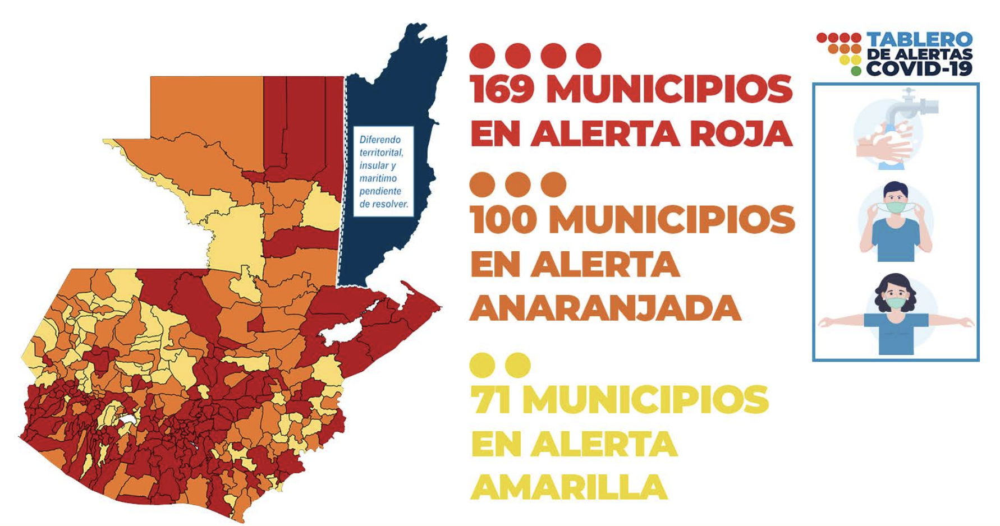
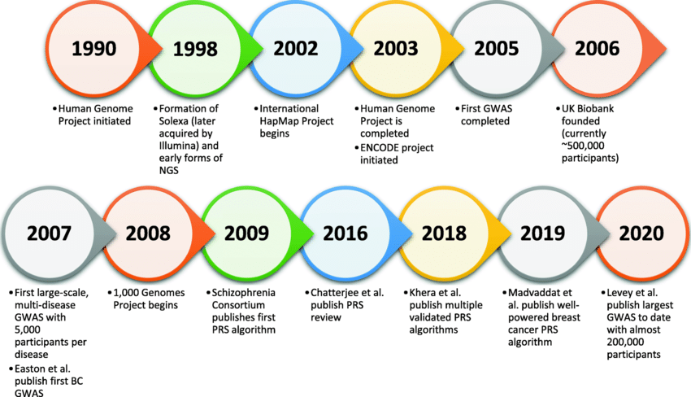
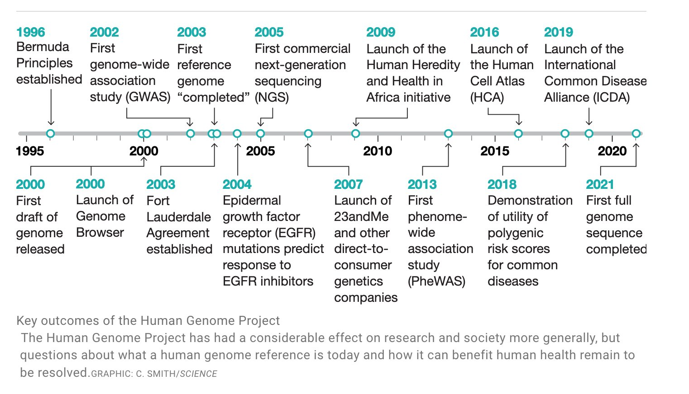
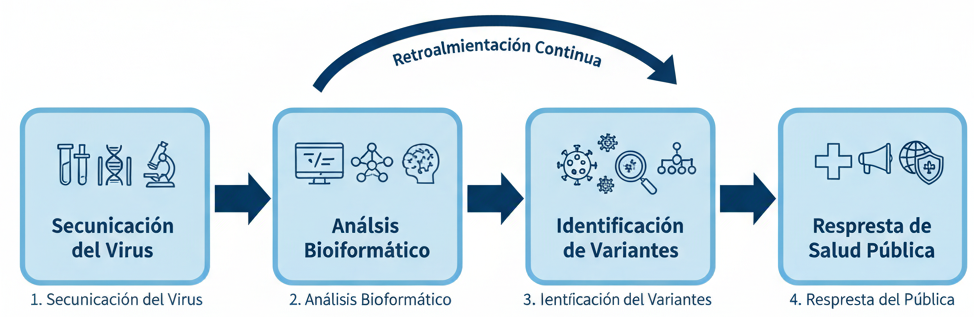
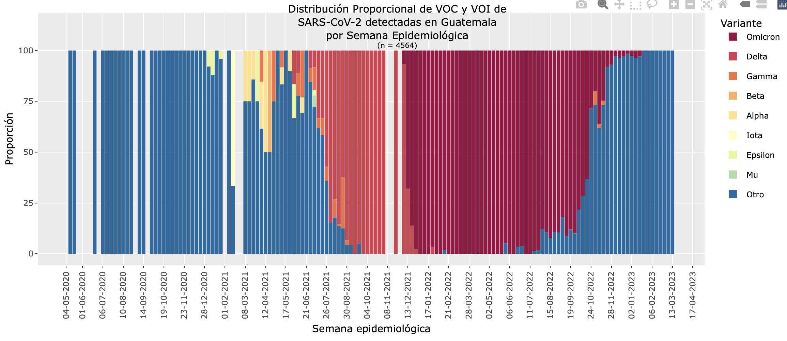

Aplicaciones de la Ciencia de Datos en Salud
Universidad de San Carlos de Guatemala
Introducción
¿Por qué hablar de Ciencia de Datos en Salud?
- Generamos más datos que nunca: historias clínicas, laboratorios, imágenes, genómica.
- Pero los datos por sí solos no significan nada sin análisis.
- La ciencia de datos convierte los datos en decisiones clínicas, políticas y científicas.
De los datos a la salud

De los datos a las decisiones
Recolección (hospital, laboratorio, sensores)
Limpieza y organización
Análisis
Interpretación clínica
Nivel 1: Ciencia de datos en la práctica clínica
- Análisis de registros hospitalarios (Excel, R, Python)
- Identificación de patrones: tratamientos, medicamentos, reingresos
- Mejora en la gestión hospitalaria
Ejemplo:
Un hospital analiza datos de pacientes con diabetes →
detecta que el 30% abandona el tratamiento después del tercer mes.
Ejemplo visual

“A veces, una simple visualización puede revelar un patrón que salva recursos o mejora la atención.”
Nivel 2: Salud pública y epidemiología digital
- Datos a gran escala → decisiones poblacionales
- Dashboards, vigilancia epidemiológica, predicción de brotes
- Ejemplo: COVID-19, dengue, influenza
Herramientas: R, Shiny, Power BI, Tableau
Ejemplo: Vigilancia de COVID-19

Preguntas que se pueden responder: - ¿Dónde están los focos más activos? - ¿Hay relación geográfica existente? - ¿Cómo cambia semana a semana?
Nivel 3: Ciencia de datos en investigación clínica
- Evaluación de tratamientos y pronósticos
- Curvas de supervivencia (Kaplan-Meier)
- Modelos de riesgo y predicción
Ejemplo:
Predicción de riesgo de infarto usando presión, colesterol, edad y hábitos.
Visualización: Curva de supervivencia

“Los datos clínicos permiten evaluar si un tratamiento realmente mejora la supervivencia.”
Ética y privacidad de los datos
- Los datos de salud son sensibles.
- Cumplimiento de normas: consentimiento, anonimización, gobernanza de datos.
- Ciencia de datos responsable = confianza pública.
Cronología de la genómica

Resultados del Proyecto del Genoma Humano

Ejemplo: Vigilancia genómica de virus

De la muestra al dato: 1. Secuenciación del virus 2. Análisis bioinformático 3. Identificación de variantes 4. Respuesta de salud pública
Vigilancia genómica del SARS-CoV-2 en Guatemala

Ejemplo: Oncología y medicina personalizada
- Detección de mutaciones que guían el tratamiento.
- Ejemplo: mutación EGFR en cáncer de pulmón → tratamiento dirigido.
- Del diagnóstico genético a la terapia personalizada.
Targeting EGFR exon 20 insertion mutations in non-small cell lung cancer

Resumen
| 1 |
Clínica |
Análisis de pacientes con diabetes |
| 2 |
Salud pública |
Vigilancia de COVID-19 |
| 3 |
Investigación |
Modelos de riesgo de infarto |
| 4 |
Bioinformática |
Medicina personalizada en cáncer |
Conclusiones
- La ciencia de datos transforma la práctica médica y la salud pública.
- Requiere colaboración entre médicos, analistas y científicos.
- El futuro de la medicina está también en los datos.
Maestría en Ciencia de Datos en Salud - USAC
🎓 Nuevo programa de la Universidad de San Carlos de Guatemala
- Formación práctica en análisis de datos de salud.
- Integración entre informática, estadística y medicina.
- Preparación para los desafíos de la salud digital y la bioinformática clínica.
¡Gracias!
Contacto:
📧 oliver@mazariegos.gt
💬 LinkedIn: https://www.linkedin.com/in/oliver-mazariegos
“El futuro de la salud se construye con datos, ética y colaboración.”